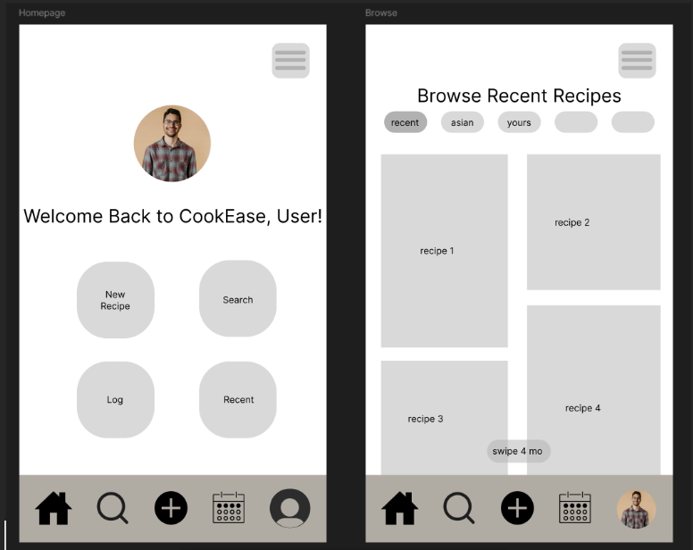
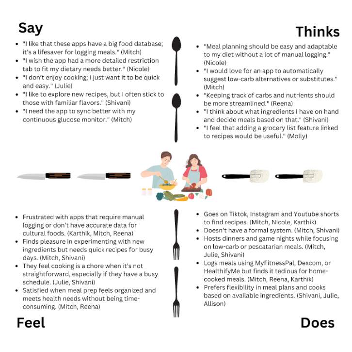
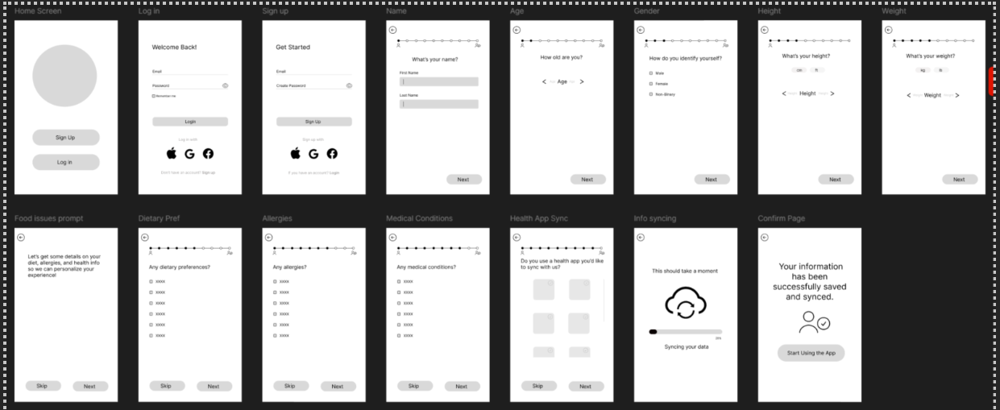
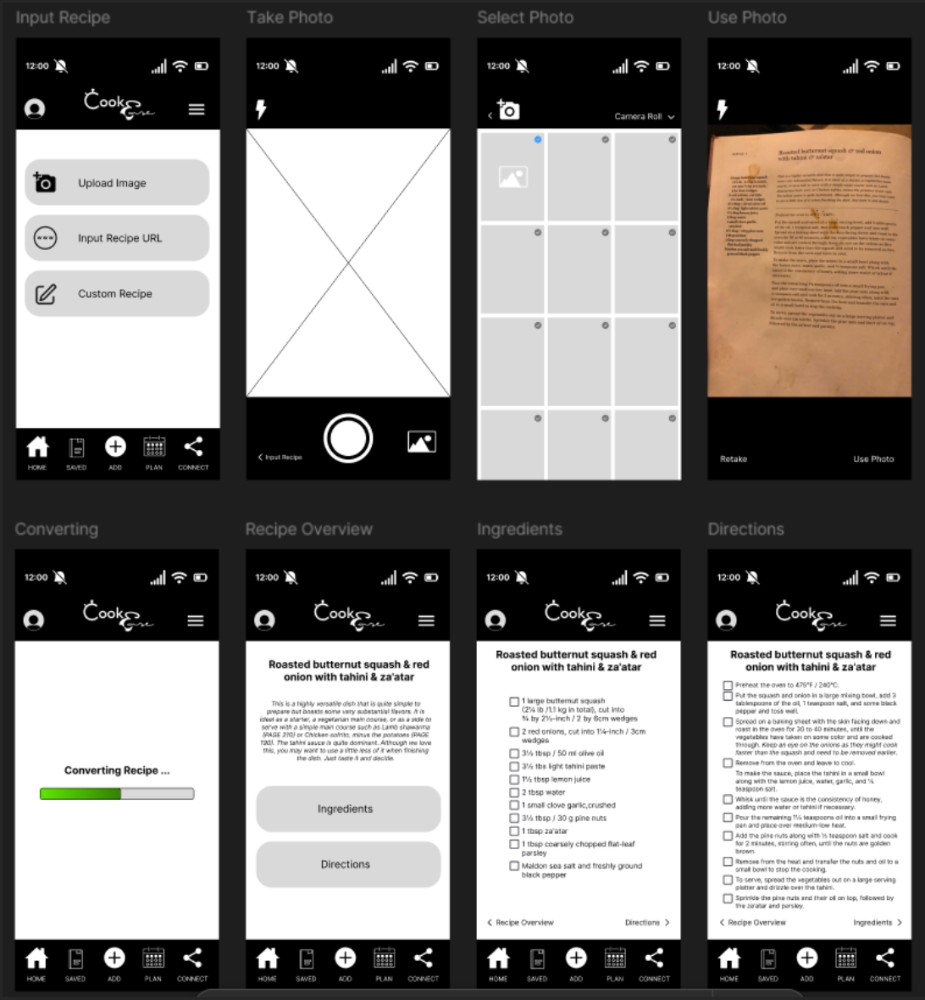
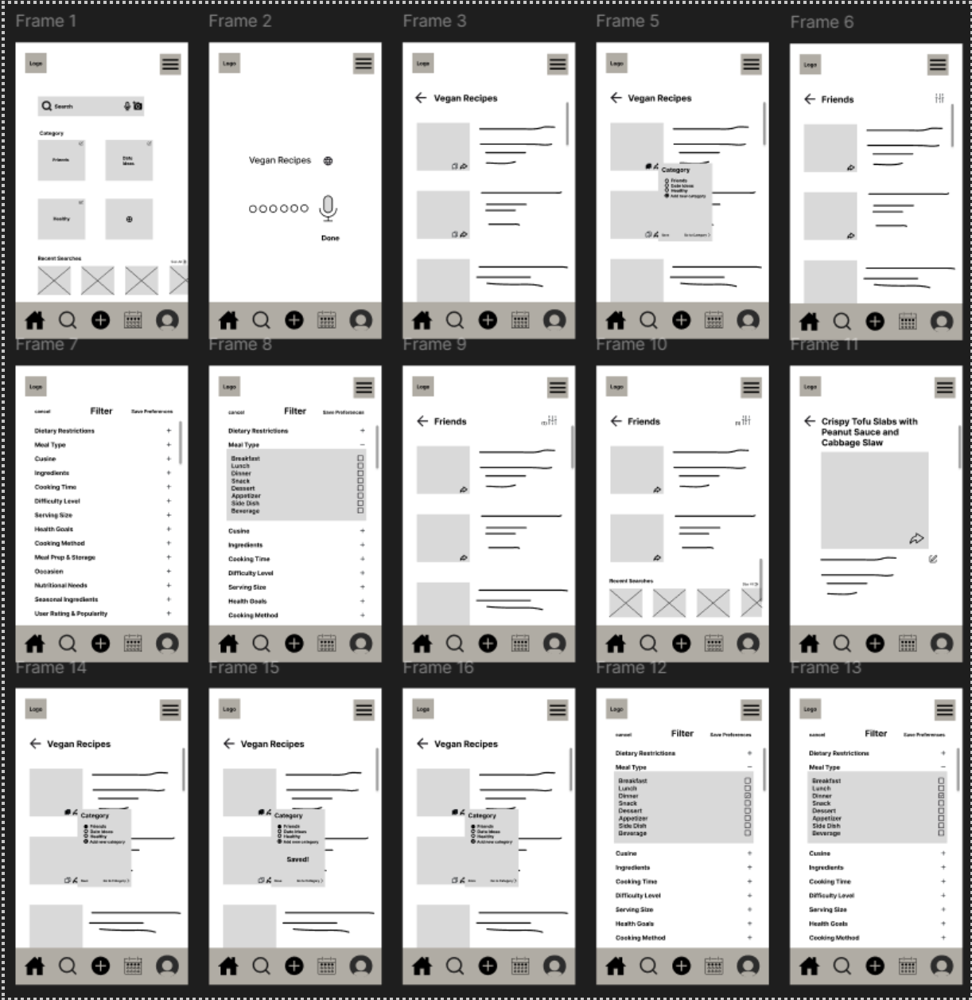
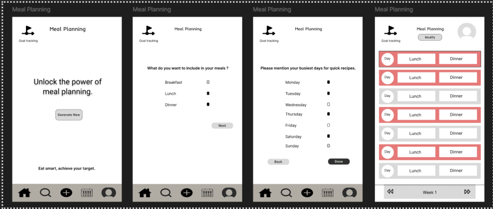

CookEase is a proposal for a tool to support everyday cooks in the kitchen. The design aims to help people keep track of their recipes in an easy-to-understand format. This project was used to support our individual understanding of Human-Computer Interaction, and by following the design principles from our studies, we were able to produce a solution that keeps the user experience in mind.
Details
Timeline: 10 weeks
Team: 5 UX Designers
Role: Research & Design
Above is the wireframe design for the CookEase homepage.

Proposal
The project began with a proposal for a potential design. We started our work by first questioning what was a potential problem space we could work in. We then created the problem statement shown below:
Individuals or families with dietary restrictions (e.g., food allergies, vegetarian, vegan, kosher, gluten-free, diabetic, etc.) need customized meal suggestions, especially when cooking for multiple people with different dietary needs.
Stages of the Design
Empathize
During this stage of the design process, our team focused on gaining a deeper understanding of users' cooking routines, dietary preferences, and meal planning habits. To achieve this, we conducted interviews with individuals who might be interested in a new cooking-related product. Our aim was to identify and document the challenges faced by users of similar platforms, utilizing an empathy map to gain detailed insights into our target audience. These unbiased findings would inform the design of the interface, user journey, and usability, as well as help us create detailed user personas for improved interaction with the product.
By interviewing users and analyzing existing apps that track eating habits and provide recipe suggestions, we aimed to uncover the key pain points and decision-making factors involved in meal preparation and planning. In Empathy and Experience in HCI, Wright and McCarthy encourage us to create “for the full range of human experience”, so we tried to keep that in mind (Wright & McCarthy, 2008). We explored topics such as dietary restrictions, motivations for cooking, timing of meal preparation, and whether users track their food intake. Ultimately, our goal was to understand the reasons behind individuals’ food choices and how they plan their menus for the week.
To deepen our understanding of the user experience for meal planning, our team explored and documented interaction with several apps in dietary tracking, meal planning, and recipe organization. These applications included MyFitnessPal, Home Chef, SNAQ, and Umami Recipe. Across these apps, we observed a common frustration with manual data entry, which felt tedious and time-consuming, which often deterred users from consistent usage.
The Empathy Map above helps describes the feelings of the interviewees

Some key findings from the research included:
- Customization for specific diets (e.g., kosher, lactose-free) and culturally diverse recipes.
- Simplified logging (e.g., barcode scanning, health device integration).
- Recipe suggestions based on available ingredients and meal prep efficiency (e.g., automated grocery lists).
- Community sharing for exchanging recipes and tips.
Ideation
This phase of the design process consisted of generating as many ideas as possible as a team. Through our research and empathizing from the last stage, we were able to come up with potential solutions that reflected the problems of the people we interviewed. In Empathy on the Edge, the authors write that “Empathy is a powerful force. Research shows that when we are empathetic, we enhance our ability to receive and process information” (Battarbee et al., 2014). By using our empathy, we were able to generate solutions that not only did we find useful, but our users could as well. Some of the solutions included:
- Creating clusters for allergies and dietary restrictions.
- Scheduling your meals and plan them for the week.
- Making the app adapt to the seasonal supply.
- Store preferences and suggest recipes accordingly.
- Allow users to create mood boards with specific preferences for certain days.

After generating these 28 initial ideas, we reflected on how this task could have been approached more efficiently. We realized that categorizing our concepts into areas such as usability, performance, and overall user experience would have streamlined the ideation process. While some ideas overlapped, this reflection allowed us to step back, reassess, and develop new, more tailored solutions that better aligned with the objectives of our project. Through this exercise, we gained valuable insight into how teams of designers collaborate to generate many ideas for a potential product.
Prototype
Building on our research and understanding of user needs related to recipe organization, cooking, and meal planning, our team identified five essential pages for the prototype and testing phase of the project: User Setup & Login, Home, Recipe Search, Recipe Input, and Meal Planning. Each component of the application aims to solve a problem that we found in our empathizing stage or reflect a solution that we made in the ideation process. Below are the wireframes we designed:

- Wireframe describing a user login/account creation.
- Component for scanning a recipe with a camera feature.
- Recipe search feature where users can filter and search for recipes.
- Meal planning calendar wireframe

After creating these modules, we then examined the user flow for our respective pages to guide our designs and ensure a seamless user experience. Through user testing, we evaluated the strengths and weaknesses of our designs, documenting key insights to refine our approach. Each team member outlined their design process and rationale, incorporating user feedback to explore potential enhancements. In a collective review, we analyzed the advantages and areas for improvement across all pages to guide the next steps in developing a cohesive and effective final design solution.
In our assessment of the different styles of all the different wireframes, we identified the User Input page as foundational to the app's overall functionality and user experience. This page is critical for enabling key features, aligning with user needs from the empathize phase, and addressing the core problem outlined in our project. Based on its significance and user testing feedback, our team chose to prioritize refining the User Input page. Strengthening its design and functionality will provide a robust foundation for the app, supporting the development and improvement of other prototypes moving forward.

Conclusion
Through our extensive research in our empathizing stage, along with our process of ideation, we were able to construct concrete solutions to the problems of our prospective users. In our prototypes, we created five different interfaces: User Setup & Login, Home, Recipe Search, Recipe Input, and Meal Planning. All these different creations contain components that were made from our research and interviews. By assessing the prototypes after they were constructed, we were able to recognize our own bias and blindness to certain features that may not have been the best for users and were able to go back and rework them. What was left after this process was a more polished product that better reflects the prospective user’s needs.
While considering potential next steps if we were to further develop this product, we would probably work to make a functional prototype. In this prototype, we would use a more complex prototyping tool such as Axure to allow the saving of variables and actual navigational redirects when showcasing the product. Other features we would continue to ideate might include:
- Collaborative recipes
- Focus on a social media-based design
- Account customization
Regardless of whether we choose to pursue this idea further, our research and prototypes have many implications for the future of human-computer interaction. The online recipe community is very fragmented, and this research serves to support a union of the various cooking groups in the online world.
References
- Battarbee, K., Suri, J. F., Howard, S. G., & IDEO. (2014). Empathy on the Edge. IDEO.
- Wright, P., & McCarthy, J. (2008, April 06). Association for Computing Machinery. Empathy and experience in HCI. https://dl.acm.org/doi/10.1145/1357054.1357156